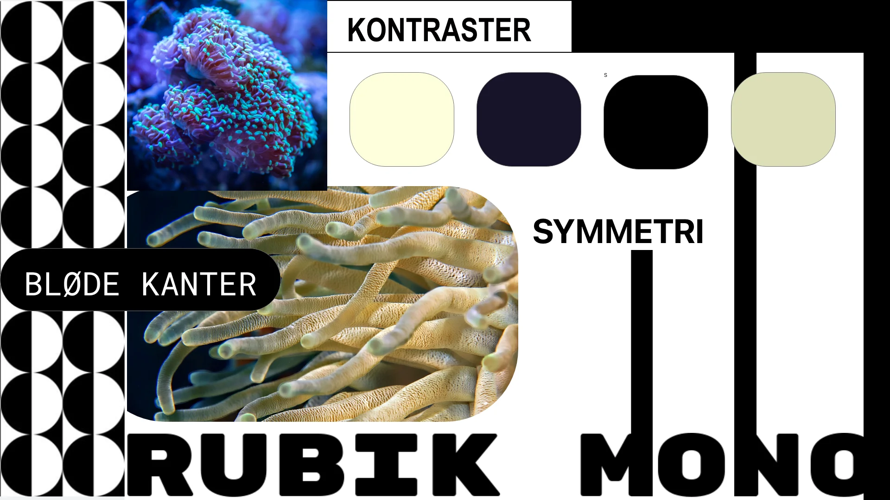
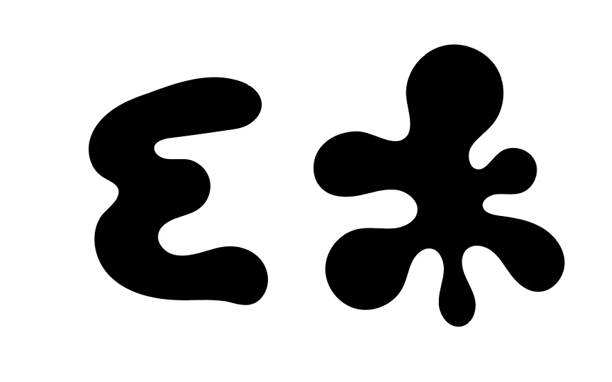
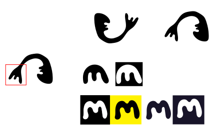
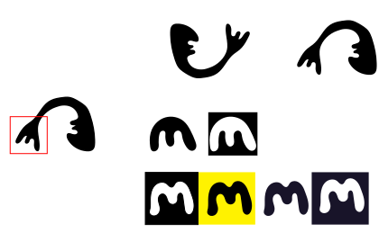

Tema 6
Portfolio

Tema 6 er er vores eksamensprojekt som består af dette portfolio. Her beskrives de temaer vi har været igennem på første semester og hvad jeg har lært. Jeg har brugt de metoder og færdigheder jeg har lært i løbet af semesteret til at producere denne hjemmeside.
Moodboard
Ikon
Process af mit logo
Mit portfolio logo tager udgangspunkt i det logo jeg burgte på mit emnesite. Jeg har på baggrund af den feedback jeg fik forbedret det, ved at forsimple det og tydeliggøre at det skal forestille et M. Jeg har beholdt den bløde form, men fjernet det unødvendige så det er mere let læseligt som logo og favicon.
 
